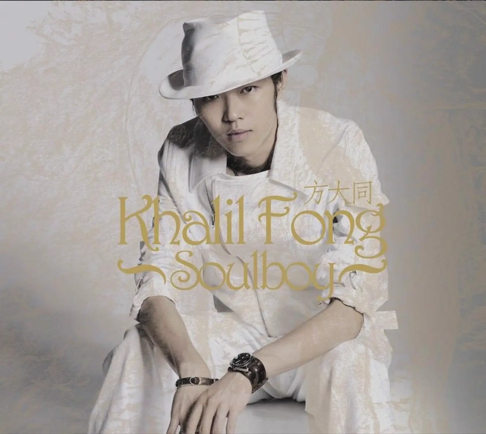
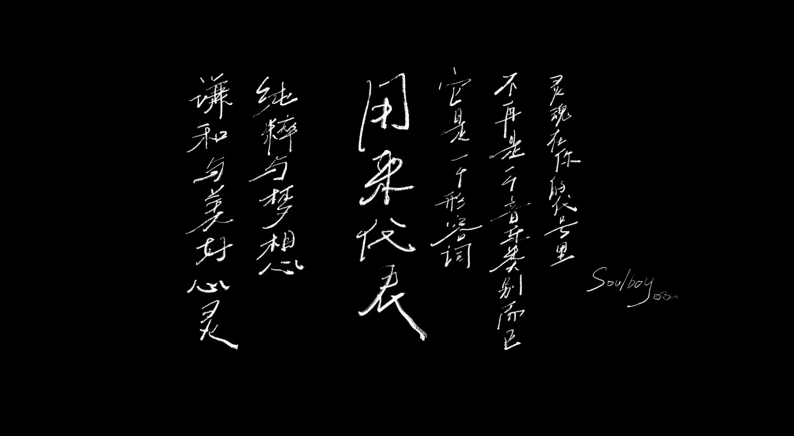
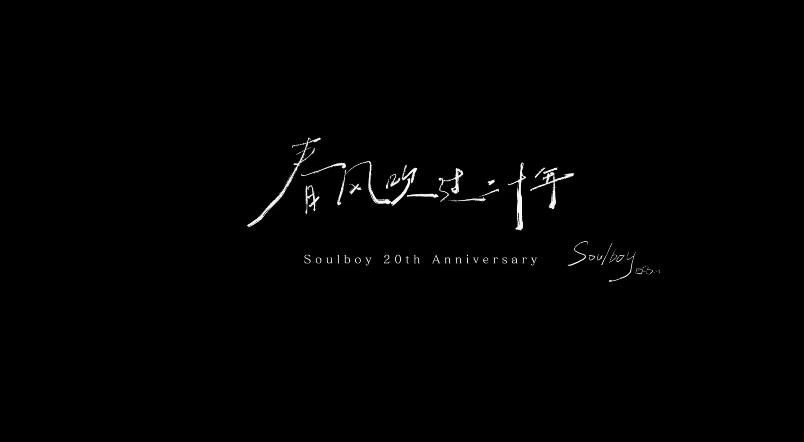

Album#8
Soulboy
{kind=link}

专辑信息
- 专辑名称：Soulboy
- 歌手：方大同 (Khalil Fong)
- 年份：2005-11-18
- 风格：流行、Soul、R&B
- 时长：49:26

2005 年 11 月 18 日，方大同发布了他的第一张专辑 Soulboy ，今天是 2025 年 11 月 18 日，正好 20 周年。 Hopico 为此还做了一个专门的节目：方大同的20年，给soulboy一首“新歌”，推荐一看。
尽管很早就知道方大同，但那时还不是他的歌迷，只是偶尔听到一首喜欢的歌（春风吹、黑洞里），在翻看原唱的时候，发现原来是方大同。
后来是看了 可能是方大同新专辑的唯一专访!丨真假方大同终于同框丨HOPICO，觉得方大同这个人好真诚，也很喜欢新专辑的音乐，就喜欢上了方大同。但是没过多久，突然就收到了方大同离世的消息，感到很不真实，不愿意相信他就这么离开了。
在他离开的那个月，我把他所有的专辑都找来听了一遍又一遍，每天挑一两首喜欢的分享到朋友圈，虽然听了一个月，但也一点都没有听腻。那个月里，我还认真地看了一遍 「15」Live in HK 2011香港演唱会，堪称神级的演唱会，演唱会的歌都很好听，也有非常棒的编曲，你能从他的演唱中看得出他很开心，很投入。听着他如此投入而开心地演唱，想到才认识他没多久，想到这么一个真诚、认真、热爱音乐、富有才华的人，竟然就这样离开了，感到很可惜、痛心，听着听着就哭了。
很喜欢方大同，以后会把他所有的专辑都分享一遍的，这次先来分享一下他的第一张专辑 Soulboy 。
关于 15 live
非常推荐看看 「15」Live in HK 2011香港演唱会，无论是方大同，还是他的乐队，你都能感受到他们非常投入，那种投入，非常感染人。
中间 Fiona（薛凯琪）和方大同合唱了「四人游」，之后 Fiona 分享了一段故事：
咁……喺第一二場我講咗啲嘢，因為今晚係尾場……大家係好需要知道嘅係一啲有關方大同嘅嘢。大家想唔想知呀？
咁就係……所以我係會 repeat 嘅，作為佢嘅朋友呢，喺呢幾個月裏面係好悶嘅，打俾佢，佢就話佢喺興明，一間 band room 度同……同緊呢隊 Wonderful Band 練習，practicing。
咁夜啲打俾佢呢，佢自己都有一間 band 房，佢間 band 房叫 Her Room，but anyways，咁佢就話，我又喺 Her Room 練緊結他。咁你再夜啲打俾佢呢，佢喺屋企又練緊結他，咁你諗住再夜啲打俾佢嘅時候呢，佢就會講「Fiona，其實而家都十二點幾喇，我哋係應該養好我哋個身體去迎接明天嘅工作」。
仲有一樣嘢我記得喇，我第一二晚唔記得講，佢話我哋所有嘅工作， and to 將你嘅工作去，去 make it perfect，其實係一種 blessing 嚟嘅，so……呢幾個月裏面，He has been practicing so much，就係希望俾一啲 perfect 嘅嘢我哋聽，so…… Thank you Khalil，Thank you
{kind=link}

Prologue (开场白)，这是他第一张专辑，他用英语、粤语、普通话介绍了这张专辑，就像是一个刚上舞台的歌手，先做了一遍自我介绍，当序曲戛然而止时，他的演出就开始了。那时他还很年轻，给人一种俏皮的感觉。
嘿 大家好 / 大家好
This is my first cd
这是我的第一个专辑 / 呢係我第一个唱片
and I want to thank you for listening.
谢谢捧场 / 多谢捧场
I hope you enjoy when you hear.
希望你们喜欢听 / 希望你哋钟意听
The songs are about life and love,
这些歌是 是讲生活 讲爱 / 呢哋歌係 讲生活 係讲爱
About all the good thing the bad thing
所有好的 所有坏的 / 所有好嘅 坏嘅
The things that could be better,
可以更好的 / 可以更好嘅
The things that change us,
可以改变我们的 / 可以改变我哋嘅
The things that make us who we are,
能让我们认识自己
And may be the person we want to become.
可以令我哋认识自己嘅
第一首歌「妹妹」，词曲都是方大同，大概是回忆了小时候见到表妹的事情。
当年她大概一岁我才五岁
还不知道她是谁
妈妈说那是你的表妹我说 ok
突然生活里出现了一个人，妈妈说是妹妹，那他能怎么样呢，只能接受身边出现一个新的亲人，有点无奈地说「ok～」。
但他也很喜欢他的这个妹妹，对她很是关爱，后来妹妹长大了，只能隔几年才见一面，但只要妹妹有需要，他都愿意帮她，始终把妹妹当宝贝宠爱。
你是我的妹妹
多可爱的妹妹
你有很高的地位
你是我的妹妹
多美丽的妹妹
你永远会是宝贝
我们在一起的时候真的很快乐
我一直最拿手的就是逗她笑笑
就算是多云天
就算是暴雨天
如果有她陪着我就好像变了晴天
眨眼已过了几年
我们隔几年见一面
真想不到侬今年有十七岁长大了
你是我的妹妹
你有很高的地位
你是我的妹妹
多美丽的妹妹
你永远会是宝贝
你以后有困难
可以来找我谈谈
说说点心里话
说出来没那么烦
你可以相信我
只想你好好过
我只希望你知道
你是我的妹妹
{kind=link}

春风吹，词是周耀辉1，作曲编曲都是方大同。这应该是比较受欢迎的一首歌，在我没关注方大同时，我也会接触到这首歌，被歌曲的旋律吸引。
春风吹有点 A cappella（阿卡贝拉）的元素，有很丰富地人声演唱，你还能听到大同酷炫的 Beatbox。中间 桥 (连接主歌副歌的段落，有人称方大同是造桥大师) 的部分还能听到他用口技模仿出风吹过的声音，层次非常丰富。
春风一吹想起谁
有所谓无所谓
只要不后悔
春风一吹忘了谁
我上一次流泪又几岁
你会退我想追
会不会对不对
也难怪我有点累
洞里蛇冬日睡
原上草春风吹
到夏天我变了谁
春风一吹，你又想起了谁，忘了谁？
「春风吹」一开始的主歌藏着方大同对他的偶像 Stevie Wonder 在 1974 年给 Minnie Reperton 制作的作品 Lovin' You 的致敬。
每天每天，律动蛮好听的，编曲上的东西我不太懂，但听起来有点华尔兹那种舞蹈的律动的感觉。在桥的部分，你能听到电西塔琴的音色，就是那个不同于吉他的、相对明亮的音色。在歌曲快结束的段落，还能听到一些管乐的旋律。
歌词讲的是有一个每天陪伴着他的人，他已经熟悉了每天和她在一起的生活，或许是发生了一些争吵，正处于要分手的阶段，但想起了每天的日常，发现已经离不开对方了，恍然大悟，决定不要错误对方，要继续在一起。
每天每天
站在忙乱又无聊的路旁
等你向我走来
每天每天
一直看见到你和你说话
才算有个开始
每天每天
我都没感觉我们有什么改变
我一直以为这是永远
而我无法想像你会离开
我已习惯
你走在我的右手边
一起看无聊搞笑片
约好去看地中海的蓝
我已习惯
我们在一起像 Old friend
分享生活里的一切
我知道你每个笑
有不同的意义存在
或许你的身边也有这么一个人，朝夕相处时间长了，变得非常熟悉，理所当然地以为会永远这样。可能某个时候忽略了对方的感受，导致产生矛盾，不要因为双方很熟悉而理所当然地认为对方不会离开，最后错过了对方。
类似的表达，让我想起了丁世光的「瘦子」：
我想是我太心急
却忽略了你
以为只要能在一起
什么都过得去
我爱你三个字
忘掉却要一辈子
而我
只能这样旁观你的消失
总之，要珍惜眼前人。
在「每天每天」之后，大同又在「女人」中再次奉劝各位男生：
你你要对你的女人好
不要总说她不好
千万不要随便爱一个甩一个
大同还有挺多这样的歌曲的，例如在「自以为 (feat.徐佳莹)」里：
我说男生的无所谓都是自以为
我们女生一回一回都在给你机会
请你别理由一堆别再傻傻自以为
怎麽学也不会 是误会是赎罪是你不对
有句话是「Happy wife，happy life」，爱自己的另一半，好的关系会让彼此都开心。
「叫我怎么说」，词曲都是方大同，一首很直白地表白歌曲。在副歌部分，还有一些像是星星闪烁般的声音，会让我想到下着雪的街头，增添了一些浪漫感。
我想我爱你
我想你爱我
我真的很想你
我应该怎麽做
我想你也知道
我想你已感染
我对你的爱意
我怎麽跟你说
叫我怎麽说
「哪怕」是一首 Bossa nova 风格的歌曲，给人一种舒缓轻松的感觉，有好听的吉他 Solo。
或许就是在这样的舒缓轻松的旋律中，他遇见了她：
你侧着你的头
仰着你的脸
双目在眨动
眼睛在说话
是欲言又止
我越来越紧张
随着音乐的节奏
美妙的旋律
柔扬的歌曲
感性的词调
我的心乱如麻
总跟不上拍
但是可能是害羞，他选择了逃避：
我不想不想再与你共舞
不想让你察觉我的心
哪怕你觉得我不近人情
我想找个医生
替我把把脉
这种现象听说是有所依据的
我最好早点习惯
我不想不想再与你共舞
不想让你察觉我的心
哪怕你觉得我不近人情
歌词是梁茹岚女士写的，是方大同的妈妈。
「南音」是林夕作词，方大同作曲编曲，写的是 阿炳 的故事，但我想大同的态度也是一样的：
音乐自己懂一样有听众
沿途点亮他命运的灯笼
二泉映月他才不管红与不红
在桥的部分，可以听到二胡的演奏，还能听到一些像是笛子或者箫的声音。
「南音」我更喜欢 15 live 的版本，live 中大同也戴着一副墨镜，演奏更偏摇滚一些，更铿锵有力一些，更表现出阿炳身残志坚的感觉。
我觉得写博客也是类似的，或许没人看，看的人不多，但自己喜欢，努力经营就好了，管他红与不红。
方大同的20年，给soulboy一首“新歌” 的最后，周杨还举办了一个现场，演奏了「南音」，当大同的歌声出现时，很是感动。
「我们能不能」，词曲都是方大同，一首呼吁世界和平的歌，编曲里有一些民族乐器，例如琵琶的音色。
有一天没有战争 有一天没有伤痕
有一天没有仇恨痛得那么深
如果我们想看见 我们一定能实现
只需要一点时间真正去改变
我们能不能 别吵别闹 冷静 别再伤人心
我们能不能相处 把世界搞好
大同有不少歌都表达了这种世界和平的愿望，例如 Peace(feat. Tia Ray) 、 TWIOCAMIC 。关于世界和平，也会想到 John Lennon 的 Imagine 和 Michael Jackson 的 Heal the World 。伟大的歌手，都是心系世界的。
「跳」，词曲都是方大同，旋律听起来确实很「跳」，歌曲的开头有点 DJ 搓碟的感觉，也是一首关于和平的歌。旋律的编曲给人一种危险的感觉，吉他和鼓都挺「狂躁」的，就如歌曲开头的歌词说的：
今天所有混乱
新闻报纸登满
是非暗战伤人
难怪睡眠不安
左看拥有一切
右看只有分裂
「跳」，有一种豁出去反抗，豁出去逃离的感觉。
「总结」，作词周耀辉，作曲方大同。看了前面两首大同的词，再和周写的词一比，就会显得大同的词非常直白，周写的词确实不错。听起来蛮轻松的一首歌，副歌的旋律也很好听，编曲上也结合了一些民乐。
天飞过几多蝴蝶
有几多原野
像我在无边无界之间
谁都说我苟且
不敢面对从前
总不能干脆的人可怜
我做过几多奉献
有几多亏欠
像爱在喜怒哀乐之间
我也知我苟且
全是过眼云烟
可一直蔓延
谁不想对从前总结
谁够勇气了解一切
你和我之间
有千条虚线
总有一个结
有没有真的总结
「赶场」，词曲都是方大同，像是现代人的写照，一直在赶，总觉得时间不够，要把每分每秒都塞满，但一直这么赶，就会忽略了身边的事物。吃饭赶，一边吃一边要看手机，食物囫囵吞枣，来不及细细品味；听歌赶，要么走路听、要么工作时听、要么一边玩手机一边听，听不到旋律里那些细节，也听不清歌词。何不放慢一点节奏，正如大同说的：
你听我说
人生旅途上
多看两岸的风光
东西南北有影无影
找一下真的感觉
「赶场」的 intro（前奏）中，方大同致敬了他喜欢的音乐人 Musiq Soulchild 在 2003 年的作品 Babymother 。
「等着你回来」，感觉大同在这首歌里玩的很开心，歌词更想唱给大同听：
等你等你回来让我开怀
等等你等你回来免我关怀
你为甚不回来
你为甚不回来
我等着你回来
我等着你回来
如果你还不还不回来
春光不再
你还不还不回来
热泪满腮
等着你回来。
这首歌改编自白光的「等着你回来」，但除了词，两首歌编曲上差异很大。
「认识你 (hidden track)」，词曲都是方大同，我很喜欢的一首，15 live 的版本 也喜欢（有很有趣的互动）。
开头的对话蛮好玩的：
Khalil ：呢度有冇人坐啊？
Ashley ：哦冇啊，你坐啦~
Khalil ：啊，唔該。
Ashley ：唔使…
Khalil ：唉…..
Khalil ：咦，飲緊乜嘢啊？
Ashley ：嗯，飲緊 cappuccino。
Khalil ：睇緊書啊？
Ashley ：哦，喺度溫緊書。
Khalil ：喂，不過今日係星期日喎。
Ashley ：係啊，我聽日要考試喇。
Khalil ：考試啊，唉…我今日就輕鬆囉（笑）。等我估下你叫咩名先~
Ashley ：嗯…好啊。
Khalil ：你叫…Ashley。
Ashley ：咦，點解你知嘅？你識我㗎？
Khalil ：哈，唔識～但係你本書度有寫嘛。
Ashley ：哦～咁你呢，你叫咩名啊？
Khalil ：我啊，驚你唔識讀喎。
Ashley ：吓？咁犀利？講嚟聽下？
Khalil ：Khalil 啊。
Ashley ：吓？咩啊？
Khalil ：Khalil。
Ashley ：Ka…li..o…
Khalil ：唉…差唔多啦，Khalil。
专辑的开头 Prologue，他没有介绍自己是谁，但最后他告诉你他是谁了，他叫 Khalil，甚至还教了你怎么发音，哈哈。认识你了，Khalil。